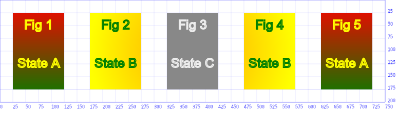
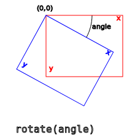

function canvasSupport () {
return !!document.createElement('canvas').getContext;
}
function canvasApp() {
if (!canvasSupport) {
return;
}
}
Modernizr—an easy-to-use, lightweight library for testing support for various web-based technologies—creates a set of static Booleans that you can test against to see whether Canvas is supported.
To include modernizr.js in your HTML page, download the code from http://
www.modernizr.com/ and then include the external .js file in your HTML page:
<script> src="modernizr.js"></script>
You probably know about the DOM (Document Object Model). Each web document is first of all given as a HTML file. When this HTML code is loaded, the browser translates the document into a hierarchical JavaScript tree object. Each element of the HTML code is represented as a node object in this tree. The root to that tree is accessed by the predefined document keyword. Any element node in this tree that corresponds to a tag with an id is then accessed by a call of document.getElementById('...'). Alternatively we could also get the array of all HTMLCanvasElement objects in one document by calling document.getElementsByTagName('canvas'). But we will not use this in our text here.

var context = canvas.getContext('2d');
the same result with this line instead:
var context = document.getElementById('myCan').getContext('2d');
HTMLCanvasElement. It has:two properties, namely
two methods, namely
getContext() that provides access to the canvas
context,
toDataURL() that translates the full content of the given canvas into code
for an image file (PNG or JPEG).
HTMLCanvasElement.toDataURL () // return
pngHTMLCanvasElement.toDataURL (type,... )//return jpeg if type='image/jpeg'
For a more convenient solution, we can attach these lines to the previous code:
canvas.onclick = function () {
window.location = canvas.toDataURL('image/png');
};
refers back to the HTMLCanvasElement of that given context.
<canvas id="ReferenceSample1" width=150 height=100 style="border: solid 5pt orange"> </canvas>
<script>
var context = document.getElementById('ReferenceSample1').getContext('2d');
context.canvas.width = 250; // reset the canvas width to 250
context.canvas.height = 50; // reset the canvas height to 50
</script>
A drawing state is the set of the current settings of a CanvasRenderingContext2D
object. It includes the current style values (strokeStyle and fillStyle), globalAlpha and globalCompositeOperation, the line (lineWidth, lineCap, lineJoin, miterLimit), shadow (shadowOffsetX, shadowOffsetY, shadowBlur, shadowColor) and text
settings (font, textAlign, textBaseline), the current clipping region and the current transformation matrix.
Each CanvasRenderingContext2D object maintains a stack of drawing states. And with save() and restore(), drawing states can be pushed
onto this stack and recovered at a later point.
save() and
restore() do not save and restore entire canvas pictures, i.e. entire contents of the given context. For
that, you should use ImageData objects and the getImageData() and putImageData()
methods (see the chapter on pixel manipulation).
fillRect() rectangle with two lines of strokeText() text in it, like so:

As it is apparent from the picture, we use 3 different style settings for the 5 figures, defined as states:
fillStyle, running from top red to bottom green and yellow strokeStyle.fillStyle, running from a orange center start to an outer green end circle and green strokeStyle.fillStyle and light gray strokeStyle.We could generate the previous canvas by following these steps:
But since we want to demonstrate the use of save() and restore(), we create the Figures in their presented order:
The full source code that actually generated the canvas is this:
// Text style settings (these will be part of Start A, B, and C alike, because they do not change)
context.textAlign = 'center';
context.textBaseline = 'middle';
context.lineWidth = 2.0;
context.font = '25px Arial';
// Settings for State A
var verticalGrad = context.createLinearGradient (0,0,0,200);
verticalGrad.addColorStop (0,'red');
verticalGrad.addColorStop (1,'green');
context.fillStyle = verticalGrad;
context.strokeStyle = 'yellow';
// Draw Figure 1
context.fillRect (25,25,100,150);
context.strokeText ("Fig 1",75,50);
context.strokeText ("State A", 75,125);
// Save State A
context.save();
// Settings for State B
var radGrad = context.createRadialGradient (375,100,5, 375,100,200);
radGrad.addColorStop (0,'orange');
radGrad.addColorStop (1,'yellow');
context.fillStyle = radGrad;
context.strokeStyle = 'green';
// Draw Figure 2
context.fillRect (175,25,100,150);
context.strokeText ("Fig 2",225,50);
context.strokeText ("State B",225,125);
// Save State B
context.save();
// Settings for State C
context.fillStyle = '#888888';
context.strokeStyle = '#EEEEEE';
// Draw Figure 3
context.fillRect (325,25,100,150);
context.strokeText ("Fig 3",375,50);
context.strokeText ("State C",375,125);
// Pop State C and restore State B
context.restore();
// Draw Figure 4
context.fillRect (475,25,100,150);
context.strokeText ("Fig 4",525,50);
context.strokeText ("State B",525,125);
// Pop state B and restore state A
context.restore();
// Draw Figure 5
context.fillRect (625,25,100,150);
context.strokeText ("Fig 5",675,50);
context.strokeText ("State A",675,125); In general geometry, a transformation turns a given object into another object, but preserves its structure. Things may appear deformed, but they are not ruptured or destroyed. The absolute position of points may change, but the relative positions remain, neighboring points are still neighbors after the transformation.
Three special transformations can be called by special methods on the canvas context:
scale() resizes the canvas, rotate() turns it around the origin, and translate() shifts it to a new position. But actually, and different to what the three previous images suggest, not the canvas as an object in the brower window is moved by any of these operations, but rather its coordinate system is altered. Below we will demonstrate what that means in many examples.
Next to these three special tranformations, there are also the general transform() and setTransform() methods, which are more powerful, but also more difficult to comprehend and apply. 16 We also show, that any combination of transformations (e.g. first scaling, then a rotation, and finally scaling, again) is itself a transformation and can be performed with one transform() call. The other way round, this also implies, that we can decompose a complex transformation into simpler steps.